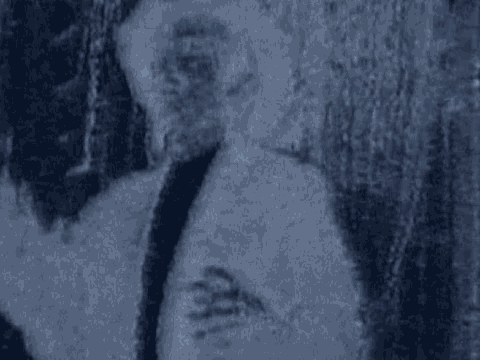

22 maybe some people tried to pull him out because they wanted to
23 come out, too, and he was up, when he fell in. By the time
24 when he fell in the water had already started coming from the
25 window because the window was open from the boat underneath.
644
1 And I tried to stick my hand again to pull him out,
2 and the water came in through the corridor now. It was like
3 full force of water came in. And I just jumped to the next
4 door which was closed, and I held the lock of that door. The
5 water was pushing me inwards, and I had only single breath to
6 go out now for the breath. So I went all the way for those
7 things, other compartments crossing all those things and to
8 the main gate, and then I came out the other side, which by
9 the time I came out the ship had already gone about half of it
10 is already under the water from the sidewards, and I climbed
11 up on top.
12 Now I was on the side of the ship, and it was going
13 this way, from straight it was going upside down, and I was
14 walking on top and climbing up until I reached on the belly of
15 the ferry.
16 Q. So you were standing eventually on the top of what was the
17 bottom hull of the ferry?
18 A. Of the bottom hull of the ship.
19 Q. What did you do after that?
20 A. Well, after that, there were many people, there were many
21 people who were trying to scream, and I saw people dying
22 there, because there were quite a lot of people they were not
23 in their compartment cabins, they were sleeping out on the
24 corridor doors. Other people were coming out, and I, within
25 few minutes I saw many bodies floating out there, and I said
645
1 that this ship might sink because it has already overturned
2 and if it sinks because I saw many people fighting for their
3 life and holding each other, and they took others, the one who
4 could swim, they drowned. So I said, if it goes underwater
5 the ship sinks, then these people who are on top we were about
6 twenty to thirty people on that belly of the ship, they might
7 come to catch me, hold of me, too, so I took off my clothes
8 and I dived from the ship. I swam for about five hundred
9 meters, but it was around the area, because I could not go the
10 other side of the land, as it was very far from me, it was
11 about nine kilometers, and nearest was about not, not near,
12 less than about two kilometers, three kilometers away from the
13 ship where it sank.
14 So I what I said then, let me go back near where I
15 can get the floater and hold the floater. There were about
16 five to six floaters only around there. So we were holding
17 about ten people in that floater.
18 Q. And were you eventually rescued?
19 A. Yes, after two hours the first ship came to rescue us.
20 Q. And did the ferry eventually sink entirely?
21 A. Not at that time, but when it was just floating upside
22 down and there were some people who were alive at that time,
23 and well, we were taken -- we were on the other ship which
24 rescued us and some police officers came there, and they saw
25 somebody knocking at the door, and they commanded that, okay,
646
1 make hole here to take out this person, and most of the people
2 who were there they said that, if you take out this the air
3 bubble once this comes out the ship will sink, and why don't
4 you like pull the ship on the side, because since its
5 floating? But, no, they say, just cut the hole there and save
6 the person who is knocking from inside there. As soon as they
7 cut the hole with the gas, and the whole air came out, they
8 saved only one person from there already. The ship all went
9 down.
10 Q. Do you know about how deep the water was at that point?
11 A. One hundred ten feet.
12 Q. Now, after you were rescued where did they bring you?
13 A. I went first to the hospital for checkup. They said no,
14 you're not supposed to go home. I said that, I am very fine,
15 I can go home, but, no, they took me to hospital for checkup.
16 Q. And that was back in Mwanza?
17 A. Mwanza, yes, sir.
18 Q. Do you know about how many people died in this ferry
19 accident?
20 A. Not less than one thousand, sir, 'cause we were only
21 hundred fourteen people who survived.
22 Q. When you got back to Mwanza did you do anything to notify
23 anyone about what happened to you and to Jalal?
24 A. Yes, I told my brothers and sisters that, look, I am sure
25 a hundred and one percent sure that Mr. Jalal could not make
647
1 it and we better notify to the family member or to any friend
2 or any relative of Mr. Jalal. So I told that to my sister
3 Tahera.
4 Q. And what happened after you asked your sister Tahera to
5 notify Jalal's friends or family about the ferry accident?
6 A. Well, she said that I think she had a phone number of
7 somebody, and she called and after three days a friend of
8 Mr. Jalal came to Mwanza, three, four days later.
9 Q. And who was the friend of Jalal that came to Mwanza three
10 or fur days later?
11 A. It was Fazhul.
12 Q. And what did Fazhul look like?
13 A. He was a short, a bit short guy, five foot something, some
14 inches, dark with a bit hair, and could speak broken Swahili
15 and broken English.
1